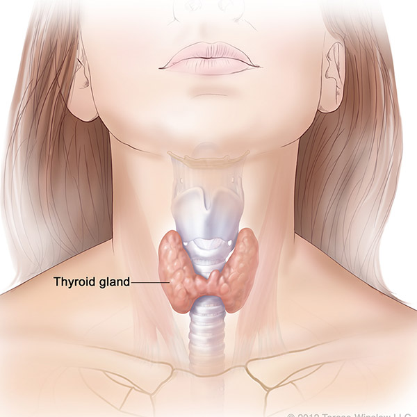

THYROID

- Foods to eat Let's see what foods people with hypothyroidism should eat.
- People with hypothyroidism should first take a nutritious diet.
- You can eat green leafy vegetables, whole grains, nuts, seeds and zinc-rich legumes, chickpeas and beans.
- If you have symptoms of hypothyroidism, take foods rich in selenium and iodine.
- Because zinc helps to regulate the thyroid. It sends a signal to the brain to release thyroid hormone.
- Selenium is another essential mineral that helps in the proper functioning of the thyroid gland. It acts as an oxidant.
- Protects the thyroid gland from damage caused by free radicals.
- Brazil, nuts, tuna, herring, eggs and legumes are excellent sources of selenium.
- Iodine is a mineral needed to make thyroid hormones.
- People with iodine deficiency are more likely to have hypothyroidism in the morning.
- So adding iodine rich foods like sponge, fish, milk and eggs can help to overcome this deficiency.
- He also said that fruits and vegetables rich in phytosterols are also good for the immune system.
- He also said that blueberries, olive oil, nuts, green tea, cloves and apples are good for thyroid health.
- Foods to Avoid People with hypothyroidism should avoid coitrogens in particular, according to the doctor.
- This is because coitrogens interfere with the normal functioning of the thyroid gland.
- Soy products, vegetables such as broccoli and cauliflower contain coagulants.
- Fruits like peaches and plums also contain coagulants.
- Highly processed and fried foods contain unsaturated fats, according to the doctor.
- This can make the symptoms of hypothyroidism worse.
- Do not take fiber foods immediately after taking thyroid medication.
- This is because fibrous foods can interfere with medications.
- Take fiber foods 2-3 hours after taking the medication.